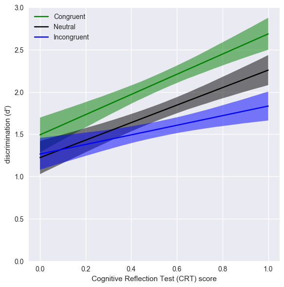

Lazy and biased? Reanalysis of Pennycook & Rand's (2018) data
A light reanalysis of
Pennycook, G., & Rand, D. G. (2018). Lazy, not biased: Susceptibility to partisan fake news is better explained by lack of reasoning than by motivated reasoning. Cognition. (OSF repo).
This paper claims that lack of cognitive reflection drives people's susceptibility to fake news, not partisan bias. This is interesting because it contradicts a 'motivated reasoning' account of surceptibility to fake news.
Lazy and biased?
The original report presents multiple analyses. Here I present an analysis which tries to show the main findings of the first two studies in single graphics.
The key idea is to calculate the sensitivity of each participant to whether the news stories are fake or real. This is essential to pull out general effects of people's willingness to rate any story they see as accurate (bias) from their specific ability to tell fake from real (true discrimination). (This separation of sensitivity from response bias is a fundamental idea of signal detection theory).
Pennycook & Rand do conduct a discrimination analysis (they use a metric they call 'discernment'), but they don't do the (in my opinion) key data visualisation. Additionally, their discrimination measure is zero-normed, meaning that you can't tell if people have any ability to tell real from fake (which also seems important to know).
So, with their raw data I calculated d' ("d prime"), a measure of discriminative ability, and plotted it against cognitive reflection (measured by CRT score). I did this according to people's partisan bias, so we have lines for for bias-congruent and bias-incongruent news stories (and neutral news stories, for study 1 only).


(The graphs show a best fit line though the data, with 95% confidence area shaded. For plots of the underlying individual responses see the notebook linked at the end).
You can see the clear positive relation between cognitive reflection and discrimination. As Pennycook & Rand discuss, higher CRT is associated with a greater ability to tell real from fake. However, this analysis also shows the effect of bias (which they also report). Discrimination is higher for news which aligns with people's preconceptions. Additionally, it looks - at least for study 1 - that this effect of bias interacts with cognitive reflection, so that, for individuals scoring low on cognitive reflection, partisan bias doesn't much affect their discrimination, but, for individuals higher in cognitive bias, partisan bias raises ability to discriminate real from fake particularly for news which aligns with their preconceptions ('congruent' items).
This pattern is the opposite of 'motivated reasoning' account, which would predict that people are more likely to believe bias-congruent fake news (and that this would interact with CRT, such that people who have more cognitive resources are more likely to be affected by this kind of motivated reasoning).
Note also that for the full range of cognitive reflection, for all news types, the average participant's sensitivity was well above zero. Even for the least reflective participants, and for stories which go against their partisan bias, they retain some ability to discriminate real from fake news.
The statistical significance of these effects can be confirmed using regression modelling (although for exploratory analysis NHST is of debatable value, and Pennycook & Rand don't emphasise the bias effects because they don't predict them). Details are in the notebook link below. Thanks to Mate Gyurkovics for help with regression modelling.
Who falls for fake news?
Dan Kahan (here) suggests that the data really show that nobody falls for fake news. Because the authors provide the raw data (heroes!) I can look into this by plotting the number of fake stories each participant rated as 'accurate':


These histograms disconfirm the suggestion that 'nobody' falls for fake news. In these studies, the majority of people fall for some fake news. While it is true that the 'fake news' stories used in the study were, on average, rated as low in accuracy, many individual stories, by many individual participants, were rated as accurate. People fell for them.
Full details of this analysis available in a Jupyter notebook, including caveats, acknowledgements and unanswered questions.
This github repo provides all the files and code for running the analysis
Tom Stafford, 2018. Theme adapted from Matt Webb's.